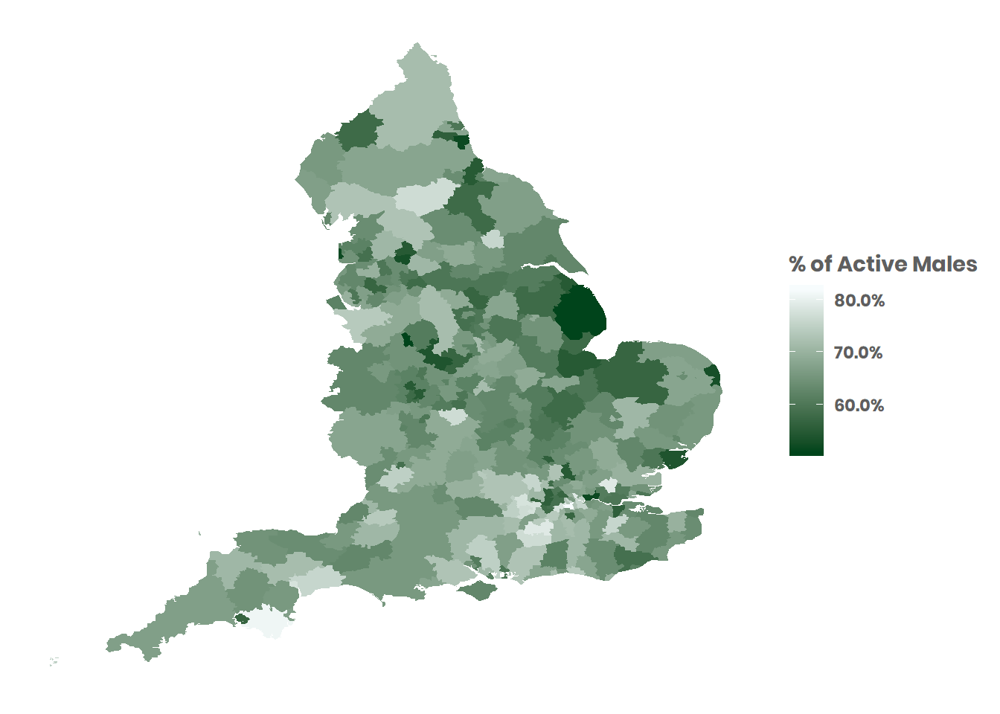

This is a brief overview on how to create custom choropleth maps in R using Shapefiles. Some basic knowledge of R is assumed.
library(ggplot2) # Our favourite grammar of graphics to create the map
library(rgdal) # turning a shapefile into a dataframe
library(plyr) # for "join" function
library(extrafont)# for Sport England house font
library(scales) # for percentage functionThe aim of the game is to convert the Shapefile into a dataframe, and join with the data you wish to map. In order to do this, you will need to have a variable common to both the dataset and the Shapefile (e.g. a Local Authority code).
In this example, we are going to use Active Lives Survey data from the Sport England Active Lives dataset (datasets available on the UK Data Archive). This data goes down to a Local Authority level (England only). We will use the Shapefile from data.gov.uk. This contains data beyond our interest (i.e. beyond England) so we will need to do a bit of data cleaning once we have created our joined dataframe.
read.csv and check the first line of the dataframe.
| lad19cd | Male.Active |
|---|---|
| E07000223 | 0.65 |
Use the rgdal package to read in the Shapefile. The readOGR function retains projections used (more information on using projections with ggplot here). After it has been read in, joined with the Active Lives data, and converted to a dataframe, we can remove extraneous data (anything not in England) by using grep (regular expression) function on the Local Authority code column (aka “lad17cd”).
setwd("Shapefile")
map1 <- readOGR(dsn = ".", layer = "Local_Authority_Districts_April_2019_Boundaries_UK_BUC", verbose = FALSE)
## map without distortion
map1@data$id <- rownames(map1@data)
map1@data <- join(map1@data, df, by="lad19cd")
map.clean <- fortify(map1)
map.clean <- join(map.clean,map1@data, by="id")
map.clean <- map.clean[grep("E", map.clean$lad19cd),] # England only
map.clean <- map.clean[, !duplicated(colnames(map.clean))] # remove dupe colsWe now have a dataframe that we can use with ggplot2. Here is an excellent ggplot cheatsheet.
We can use geom_polygon to create our map, and strip out axes, gridlines etc. using theme.
ggplot() +
geom_polygon(data = map.clean, aes(x = long, y = lat, group = group, fill = Male.Active))+
theme_minimal() +
theme(axis.title.x = element_blank(),axis.title.y = element_blank(),
text = element_text(family = "Poppins", color = "#5F5F5F"),
plot.title=element_text(size=14,family = "Poppins", face="bold", hjust = 0.5),
panel.grid = element_blank(),
axis.text = element_blank(),
axis.ticks.x = element_blank())+
scale_fill_gradient(high = '#f7fcfd', low = '#00441b',
name='% of Active Males', breaks = 0.1*0:9, labels = percent(0.1*0:9))